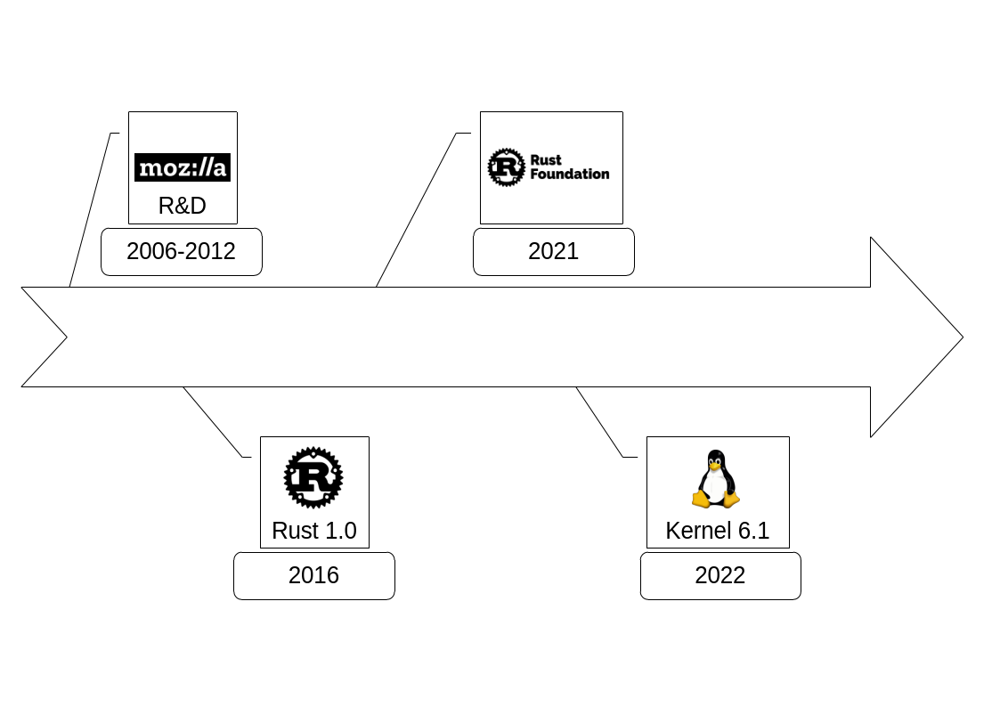

Rust, why the hype?
slides available on GitHub
What is Rust?
- System programming language (like C++)
- Safe, concurrent and fast
- Compiled, without runtime
- Static strong typing
fn main() {
println!("Hello developer's day");
}
Why the hype?
Most loved programming language since 2016
- Modern language & toolchain
- Fast + safe (memory & concurrency safety)
Rust toolchain
- rustup Rust toolchain installer
- cargo Rust package manager & more
- rustc Rust compiler (LLVM)
- rustfmt Rust code formatter
- rustdoc Rust doc generation
- clippy Rust code linter (like pylint, ruff, ...)
- rust-analyzer Rust LSP implementation (IDE backend)
- Rust IDE support: VSCode, Neovim, Zed, Lapce, helix, RustRover, ...
Rust unique concepts
- Ownership & borrowing (who owns/shares the data)
- Lifetime (how long the data lives)
- Checked by the compiler (borrow checker)
Ownership rules
- Each value in Rust has a variable that's called its owner
- There can only be one owner at a time.
- When the owner goes out of scope, the value will be dropped.
Borrowing rules
- At any given time, you may have:
- either exactly one mutable reference (&mutT)
- or one or more immutable references (&T)
- References are guaranteed (by the compiler) to be valid
Ownership & Borrowing Syntax
fn read_book(book: &Book) {
// gain non mutable access to `book`
// and give it back (borrow it)
}
fn sign_book(book: &mut Book) {
// gain exclusive mutable access to `book`
// and give it back (borrow it)
}
fn destroy_book(book: Book) {
// become the new owner of `book` (own it)
} // here book is destroyed
Lifetimes, behind the scene
fn main() {
let dangling; // --------+- 'a
{ // |
let local = 42; // -+- 'b |
dangling = &local; // | |
} // -+ |
println!("{}", *dangling); // |
} // --------+
Example: Preventing dangling pointer
fn main() {
let dangling;
{
let local = 42;
dangling = &local;
}
println!("this is not fine: {}", *dangling);
}
// cpp
int main() {
int *dangling;
{
int local = 42;
dangling = &local;
}
std::cout << "this is not fine: "<< *dangling << std::endl;
return 0;
}
What does the compiler say?
fn main() {
let dangling;
{
let local = 42;
dangling = &local;
}
println!("this is not fine: {}", *dangling);
}

What does your IDE say?


Iterators & Parallel Data Processing
fn sum_of_squares(input: &[i32]) -> i32 {
input
.iter() // <-- just change that!
.map(|&i| i * i)
.sum()
}
# Python
def sum_of_squares(input: List[int]) -> int:
return sum(map(lambda i: i * i, input))
Rayon on crates.io
Rayon Parallel Iterator
use rayon::prelude::*;
fn sum_of_squares(input: &[i32]) -> i32 {
input
.par_iter() // <-- parallel iterator
.map(|&i| i * i)
.sum()
}
fn main() {
println!(
"sum of squares: {}",
sum_of_squares(vec![1, 2, 3, 4, 5, 6].as_slice())
)
}
Questions?

Ferris: Rust unofficial mascot
animation by A. L. Palmer (Rust Fest Berlin 2016)
A brief history of Rust
Rust showcase
- Servo Web rendering engine
- Alacritty Terminal emulator
- Rustls Cryptographic library
- Ripgrep User-friendly and fast grep alternative
- Polars Dataframe library (Python/Rust)
- Ruff Python linter (10-100x faster than other linters)
- Brotli Compression lib (developed by dropbox)
- Tokio Async runtime (used by Discord for backend)
- RobotS Cité de l'espace demo rovers (video)
- Asahi Apple M1 GPU driver (not by Apple...)
- Treesitter Incremental parsing system for programming tool